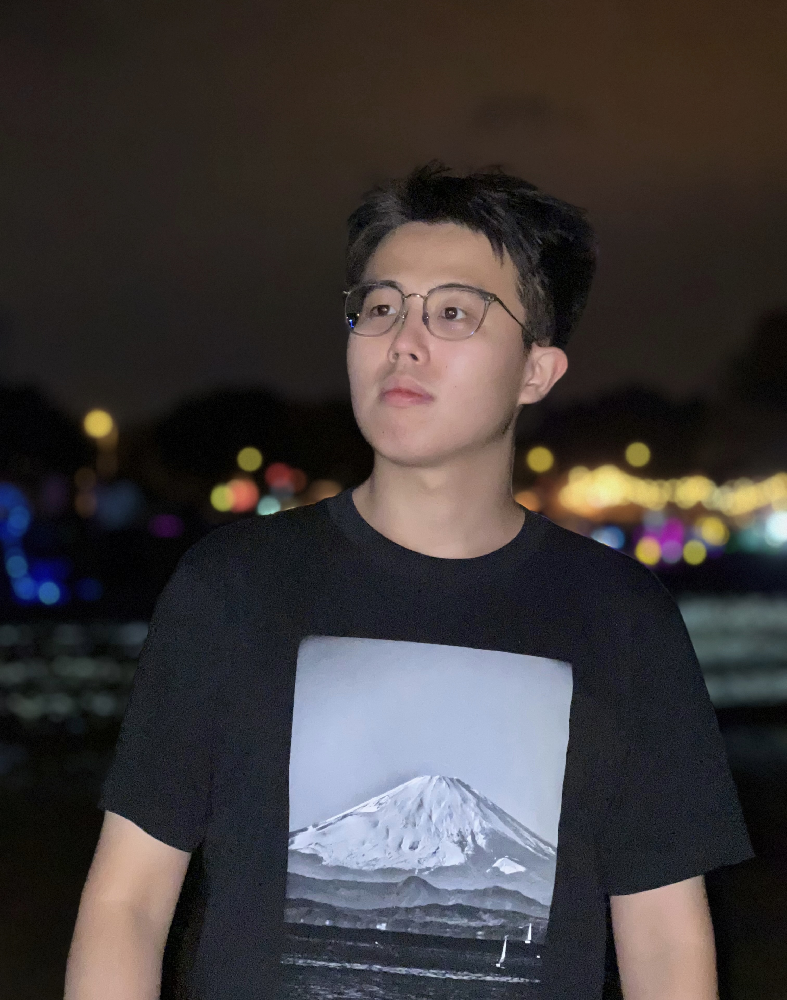

|  | WANG Ze Dong (王泽栋) Address: RPg Hub 1007, Academic Building, HKUST, Clear Water Bay, Kowloon, Hong Kong (MAP).
[Google Scholar] [OpenReview] [Twitter (X)] [Hugging Face] [GitHub] [ORCID] [LinkedIn] [Strava] Humor, art, science, and being kind to each other is how you preserve your sanity in a darkening world. |
Short Bio
News
- [2025.05.20]I was listed as an Notable Reviewer at ICLR 2025 (rate: 2.6%, 473/18323). Happy to contribute to ICLR!
- [2025.05.16]One paper on (M)LLM optimizers, SGG, is accepted at ACL 2025 main. Congrats to all co-authors!
- [2025.04.04]One co-authored paper on visual generation & representation learning, MergeVQ, is accepted at CVPR 2025, ranking 1st in 🤗Hugging Face Daily Papers, and ranking 4th in Weekly Papers. Congrats to all co-authors!
- [2024.12.12]One co-authored paper on low-level vision, PGHHNet, is accepted at AAAI 2025. Congrats to all co-authors!
- [2024.11.04]I was listed as an Outstanding Reviewer at BMVC 2024 (rate: 19.3%, 166/860). Happy to contribute to BMVC!
- [2024.11.04]I was listed as an Outstanding Reviewer at ACM MM 2024 (139/x). Happy to contribute to ACM MM!
- [2024.10.10]One paper on neural nets & optimizers, BOCB, is released. Welcome to visit Hugging Face and Project page.
- [2024.09.24]I was listed as an Outstanding Reviewer at ECCV 2024 (rate: 2.7%, 198/7293). Happy to contribute to ECCV!
- [2024.04.16]One co-authored paper on sequence modeling, LongVQ, is accepted at IJCAI 2024. Congrats to Zicheng Liu!
- [2024.01.16]One paper on vision backbone, MogaNet, is accepted at ICLR 2024. Code & weights (220 stars) are released!
- [2024.01.16]One co-authored paper on semi-sup learning, SemiReward, is accepted at ICLR 2024. Congrats to Siyuan Li!
- [2024.01.09]I am invited to serve as an emergency reviewer at ICLR 2024 (TinyPapers). It will be held in Vienna, Austria.
- [2023.09.31]One co-authored paper on video prediction, OpenSTL, is accepted at NeurIPS 2023. Congrats to Cheng Tan!
- [2023.06.25]Got my B.Eng. degree from Huazhong University of Science and Technology! Special thanks to my undergraduate supervisor Prof. Xinggang Wang for his generous support!
- [2022.09.11]One preprint on data augmentation, OpenMixup, is presented for vision tasks. This is also my first arXiv paper!
- [2022.09.11]Maintain an open-source repository, OpenMixup (648 stars), for both supervised, semi- and self-supervised visual representation learning based on PyTorch. On updating!
- [2022.07.06]Fortunate to become visiting student at Westlake University.
- [2021.09.01]Fortunate to become research intern under the supervision of Prof. Xinggang Wang.
- [2021.06.01]Fortunate to become research intern in SIAT-MMLab at Shenzhen Institute of Advanced Technology, CAS.
Research Interests
Currently, I focus mostly on Computer Vision, Multi-task and Multi-modal Learning, including (but not limited to):- Data-efficient Learning: OpenMixup (arXiv'22), SAMix (arXiv'22), SemiReward (ICLR'24)
- Efficient Model Architectures: MogaNet (ICLR'24), MergeVQ (CVPR'25)
- (Multi-task) Optimizers: BOCB (arXiv'24), SGG (ACL'25 Main), Rep-MTL
Education
 The Hong Kong University of Science and Technology (2025-now)
The Hong Kong University of Science and Technology (2025-now)
• Ph.D. in Computer Science and Engineering.
• Topics: Multi-task and Multi-modal Learning.
• Advisor: Prof. Dan Xu.
 Huazhong University of Science and Technology (2019-2023)
Huazhong University of Science and Technology (2019-2023)
• B.Eng. in Electronic and Information Engineering.
• Thesis: Efficient ConvNet-based Vision Backbone for Multiple Tasks (Grade: 92/100).
• Advisor: Prof. Xinggang Wang.
Research Experience
 ZEEKR Intelligent Technology (2024.04-2025.04)
ZEEKR Intelligent Technology (2024.04-2025.04)
• Topics: Efficient Multi-task Optimization.
• Advisor: Prof. Dan Xu (University-Enterprise Cooperation).
AI Lab, Westlake University (2022.07-2024.02)
• Topics: Visual Representation Learning and AI for Science.
• Advisor: Chair Prof. Stan Z. Li (IEEE Fellow, IAPR Fellow).
 Xinggang Wang's Vision Group, HUST (2021.09-2023.03)
Xinggang Wang's Vision Group, HUST (2021.09-2023.03)
• Topics: Few-shot Semantic Segmentation.
• Advisor: Prof. Xinggang Wang.
 SIAT-MMLab, Chinese Academy of Sciences (2021.06-2021.09)
SIAT-MMLab, Chinese Academy of Sciences (2021.06-2021.09)
• Topics: Semantic Segmentation and Text Spotting.
• Advisor: Dr. Bin Fu.
Selected Awards and Honors
-
Notable Reviewer
(Top 2.6%) -
Outstanding Reviewer
(Top 2.7%) -
Outstanding Reviewer
(139/x) -
Outstanding Reviewer
(Top 19.3%)
Publications
Selected Preprints (*: Equal Contribution. †: Corresponding Author.):
 |
Siyuan Li*, Juanxi Tian*, Zedong Wang*, Luyuan Zhang, Zicheng Liu, Weiyang Jin, Yang Liu, Baigui Sun, Stan Z. Li† arXiv, 2024 [arXiv] [🤗HF] [Project] [Code] [BibTeX] |
 |
Siyuan Li*, Zicheng Liu*, Juanxi Tian*, Ge Wang*, Zedong Wang, Weiyang Jin, Di Wu, Cheng Tan, Tao Lin, Yang Liu, Baigui Sun, Stan Z. Li† arXiv, 2024 [arXiv] [🤗HF] [Code] [BibTeX] |
 |
Siyuan Li*, Luyuan Zhang*, Zedong Wang, Di Wu, Lirong Wu, Zicheng Liu, Jun Xia, Cheng Tan, Yang Liu, Baigui Sun, Stan Z. Li† arXiv, 2023 [arXiv] [Code] [BibTeX] |
Conferences (As First Author):
|
|
Siyuan Li*, Juanxi Tian* Zedong Wang*, Xin Jin, Zicheng Liu, Wentao Zhang, Dan Xu The 63rd Annual Meeting of the Association for Computational Linguistics (ACL Main), 2025 [arXiv] [🤗HF DailyPapers Top-5] [Project] [BibTeX] |
 |
Siyuan Li*, Zedong Wang*, Zicheng Liu, Cheng Tan, Haitao Lin, Di Wu, Zhiyuan Chen, Jiangbin Zheng, Stan Z. Li† International Conference on Learning Representations (ICLR), 2024 [arXiv] [Code] [Zhihu] [BibTeX] |
 |
Siyuan Li*, Zedong Wang*, Zicheng Liu, Di Wu, Cheng Tan, Jiangbin Zheng, Yufei Huang, Stan Z. Li† International Conference on Machine Learning (ICML), 2024 [arXiv] [Code] [BibTeX] |
Conferences (As Co-author):
 |
[NEW!] MergeVQ: A Unified Framework for Visual Generation and Representation with Disentangled Token Merging and Quantization
Siyuan Li*, Luyuan Zhang*, Zedong Wang, Juanxi Tian, Cheng Tan, Zicheng Liu, Chang Yu, Qingsong Xie, Haonan Lu, Haoqian Wang, Zhen Lei† IEEE/CVF Conference on Computer Vision (CVPR), 2025 [arXiv] [🤗HF DailyPapers Top-1] [Project] [BibTeX] |
 |
Zicheng Liu, Siyuan Li, Li Wang, Zedong Wang, Yunfan Liu, Stan Z. Li† International Conference on Machine Learning (ICML), 2024 [arXiv] [Code] [BibTeX] |
 |
Zicheng Liu, Li Wang, Siyuan Li, Zedong Wang, Haitao Lin, Stan Z. Li† International Joint Conference on Artificial Intelligence (IJCAI), 2024 [arXiv] [Code] [BibTeX] |
 |
Siyuan Li*, Weiyang Jin*, Zedong Wang, Fang Wu, Zicheng Liu, Cheng Tan, Stan Z. Li† International Conference on Learning Representations (ICLR), 2024 [arXiv] [Code] [BibTeX] |
 |
Cheng Tan*, Siyuan Li*, Zhangyang Gao, Wenfei Guan, Zedong Wang, Zicheng Liu, Lirong Wu, Stan Z. Li† Advances in Neural Information Processing Systems (NeurIPS), 2023 [arXiv] [Code] [Zhihu] [BibTeX] |
Professional Services
Conference Reviewer/PC Member:
- International Conference on Learning Representations (ICLR), 2024 (TinyPapers), 2025
- Annual Conference on Neural Information Processing Systems (NeurIPS), 2024, 2025
- International Conference on Machine Learning (ICML), 2024, 2025
- IEEE/CVF Conference on Computer Vision and Pattern Recognition (CVPR), 2025
- European Conference on Computer Vision (ECCV), 2024
- AAAI Conference on Artificial Intelligence (AAAI), 2025
- ACM International Conference on Multimedia (ACM MM), 2024
- BMVA The British Machine Vision Conference (BMVC), 2024, 2025
- IAPR International Conference on Pattern Recognition (ICPR), 2024
Journal Reviewer:
- IEEE Transactions on Knowledge and Data Engineering (TKDE)
Membership:
- China Computer Federation (CCF), Student Member, 2024-2026
- China Society of Image and Graphics (CSIG), Student Member, 2023
Acknowledgement
My research career cannot be possible without the support from all my awesome mentors, collaborators, and friends:- Prof. Xinggang Wang, Prof. Yu Zhou at HUST.
- Prof. Stan Z. Li, Dr. Siyuan Li, Dr. Zicheng Liu, Dr. Haitao Lin, Dr. Jiangbin Zheng, Mr. Siqi Ma at Westlake University.
- Prof. Dan Xu, Dr. Zhenxing Mi, Dr. Yuxin Wang, Mr. Yucheng Wang, Mr. Yiwei Chen at HKUST.
- Mr. Aozhong Zhang at SUNY Albany.
Beyond academia, I feel incredibly fortunate to met wonderful friends along the way (particularly during my middle and high school years in Shenzhen and two years in Hangzhou). Special thanks to Chloe, we met by chance and both joined Westlake University for summer research in 2022. Thank you for your presence and support these years, and I am deeply grateful for our shared moments. Whether we are still in touch or not, I wish you all the best and a bright future!
Even if most of you above may never visit this page, my door is always open for a chat - coffee's on me!
Fragments of Memories
Great memories with my advisors: Prof. Xinggang Wang (HUST).